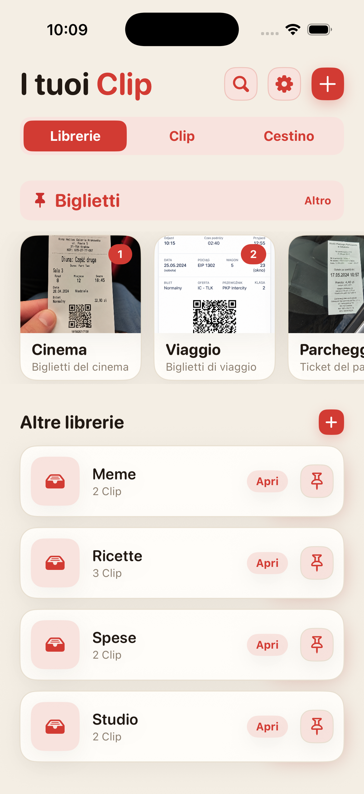
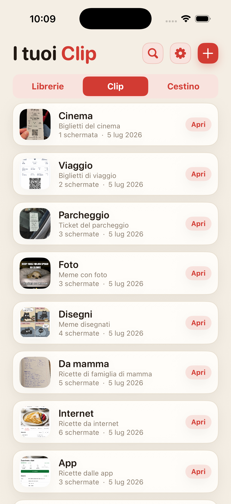
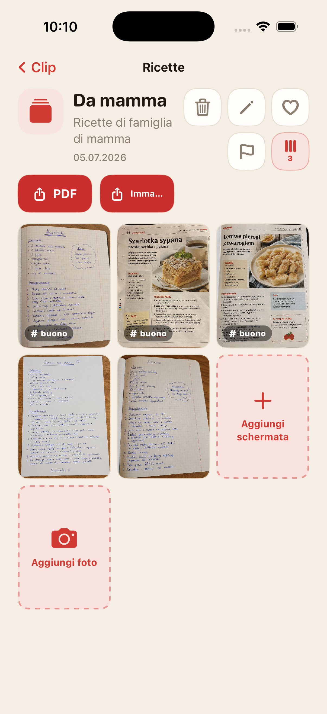
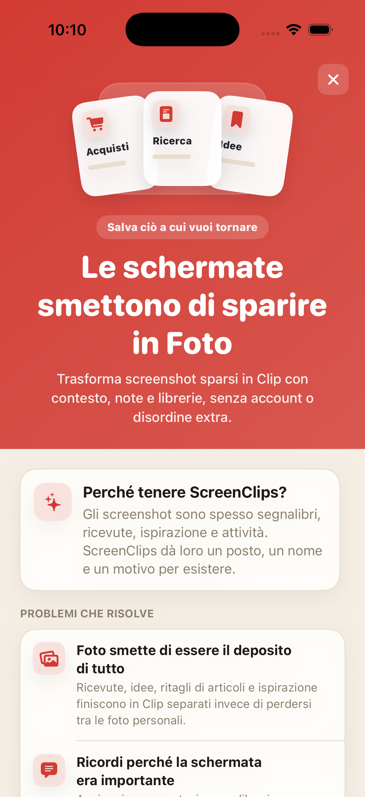

Lo screenshot si perde nel mucchio
Salvi qualcosa di importante e una settimana dopo scorri la galleria come se stessi cercando una prova in un fascicolo.
Trasforma screenshot sparsi in Clip con un nome, una nota e una libreria tutta loro. Senza account, senza cloud e senza scavare ogni volta nel rullino per ritrovare qualcosa.

Scontrini, ricette, biglietti, idee e ritagli di articoli finiscono tra selfie, meme e foto scattate per sbaglio. Abbiamo inventato il cloud e poi non troviamo lo screenshot con l'indirizzo dell'hotel.
Salvi qualcosa di importante e una settimana dopo scorri la galleria come se stessi cercando una prova in un fascicolo.
Da sola, l'immagine spesso non basta. ScreenClips ti lascia aggiungere un nome e una nota.
Acquisti, lavoro, viaggi e studio meritano spazi separati, non un unico mucchio infinito in Foto.
Separa ricette, ricevute, biglietti, ricerche, studio o qualsiasi altra cosa che vuoi davvero ritrovare.
Una Clip raccoglie tutto quello che riguarda un tema preciso. Ha un nome, una descrizione e i suoi screenshot.
Apri la libreria, scegli la Clip e hai tutto insieme. Niente maratona nel rullino.

ScreenClips non prova a indovinare tutto al posto tuo. Ti dà una struttura semplice: una libreria per l'argomento, una Clip per il caso concreto, screenshot e foto dentro.
Raccogli il materiale dentro le Clip e continua ad aggiungere quando il tema cresce.
Trasforma una Clip in un file pulito quando vuoi inviarla o conservarla fuori dall'app.
Preferiti, contrassegni e ordine dove prima c'erano solo scorrimento e sospiri.

ScreenClips funziona in locale. Non serve un account per mettere ordine, e non devi consegnare ricevute, note e piani a un altro servizio che promette solo di “migliorare l'esperienza”.
Premium non complica l'app. Ti dà più spazio per librerie, Clip e screenshot. Il prezzo è mostrato nell'App Store.
Scarica suApp Store
No. Rimuovere un'immagine da una Clip non elimina l'originale da Foto.
Sì. ScreenClips è pensata come organizer locale sul tuo iPhone.
No. ScreenClips non richiede un account per organizzare le Clip.
Sì. Puoi aggiungere screenshot e foto quando fanno parte di una Clip.
ScreenClips mette ordine in ciò che salvi “per dopo”. Questa volta, il dopo si trova davvero.
Scarica suApp Store